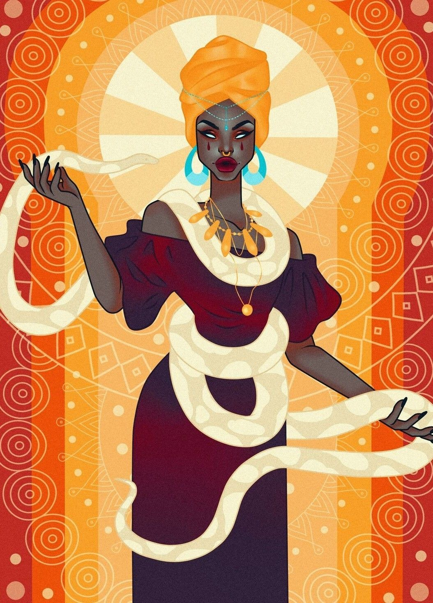
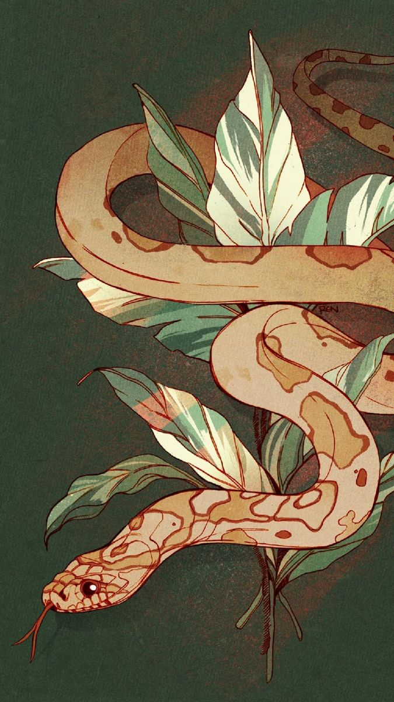

1988.04.08
Solange és Naya Laveau születése.

A Trudeau család egy kisebb, de ősi és aranyvérű varázslócsalád volt Franciaországban. Egyik nagy európai házhoz sem tartozott, nem volt kötődésük a Malfoyokhoz, Lestrange-ekhez, vagy akár a Flamelekhez, vérvonaluk azonban több ágon is visszavezethető a kora újkor mágikus közösségeihez, köztük olyan polgári és gyarmati eredetű családokra, melyek Franciaország különböző kikötővárosain keresztül érkeztek, és etnikailag is sokszínűbb hátteret képviseltek, mint a klasszikus európai aranyvérű házak.
A Trudeaukat a francia varázslótársadalom soha nem tartotta számon hatalmi tényezőként, de mindig hasznosak voltak, különösen, ha halálhoz köthető mágiákról volt szó. Nevük rendre felbukkant a járványok és más tömegpusztítások idején, a nagy felkelések és társadalmi összeomlások alatt, és a legsúlyosabb boszorkányüldözéseknél. Különleges tehetségük volt a nekromágiában, a rituálékban, és mindenhez, ami halálhoz köthető.
1692 után települtek az Új Világba, miután Európában megszületett a Varázstitok Alaptörvény. Önkéntes száműzetésük Louisianába vitte őket francia gyarmati kapcsolataikon át, még azelőtt, hogy az Amerikai Egyesült Államok létrejött volna. A család ekkortájt vált ketté. A Trudeau-k nagyrészt északra, első sorban a mai Kanada területe felé vándoroltak, a család másik ága pedig Laveaux néven ott maradt délen. Nevük néhány generációval később amerikanizálódott, mára már a Laveau név vált ismertté. A névváltoztatás segített abban, hogy leváljanak az európai vérvonal nyilvántartásokról, az Egyesült Államokban pedig (ekkortájt még) nem volt olyan erős a vértisztaság-kultusz, mint Európában, vagy napjaink Amerikájában. Családjuk legprominensebb leszármazottja Marie Laveau, aki köré a mai napig erős, magnix kultusz tartozik. Marie Louisiana meghatározó figurájává vált, és kivételes tekintélyt szerzett tettei révén.
Mágikus és nem mágikus betegségek tombolása idején ápolta a betegeket, különös tekintettel a sárga lázra, kolera járványra és sárkányhimlőre. Bábaként, gyógyítóként és haldoklók lelki támaszaként működött. Fodrászként bejárása volt a leggazdagabb családokhoz, és olyan információkhoz jutott, melyekhez senki más nem férhetett hozzá. Az így szerzett tudást olykor zsarolásra használta, amivel a közösséget védte, máskor pedig tisztánlátásával és mágikus ismereteivel segített a problémák megoldásában, ezzel válságokat és konfliktusokat oldva meg. Marie tudatosan élt befolyásával. A család régi, rituális mágiáját, a voodoo ezen ágát aktívan használta, különösen, ha az elkerülhetetlen volt.
Tanácsai idővel annyira megkerülhetetlenné váltak, hogy az állam politikai, pénzügyi és rendfenntartó körei semmilyen komoly döntést nem mertek meghozni az ő véleménye nélkül. Marie körül elterjedt az a hiedelem, hogy nem öregszik a megszokott módon. Pletykák keringtek Marie sötétebb, kevésbé ismert oldaláról, élethez és halálhoz köthető rítusokról. A legvadabbak szerint évente csecsemőket áldozott egy Papa Legba néven emlegetett alaknak, akitől a hatalma származott, sőt, ezzel párhuzamosan megszületett egy olyan legenda is, miszerint a „Voodoo Királynő” valójában soha nem halt meg, hanem átvette azonos nevű lánya helyét még egy hosszú emberöltőre. A források ellentmondásosak, senki nem tudja az igazat, hogy tényleg kivételes hatalmú boszorkány volt-e, vagy csak pletyka az egész. Abban azonban mindenki egyetért, hogy bármi is az igazság, Marie tudatosan hagyta fennmaradni ezt a bizonytalanságot, ami a megbecsülés mellett a Laveau névhez kötötte a félelmet is.
A 21. század elejére a Laveau család helyzete megváltozni látszik. Marie Laveau öröksége és a család már több évszázada fennálló, stabil és megszakíthatatlan jelenléte a régióban felkeltette az aranyvérű elit, különösen a Yaxley család figyelmét. Vérvonaluk vitathatatlanul stabil annak ellenére is, hogy a dokumentációjuk nem illeszkedik eléggé az európai mintához. A Laveau család egyszerűen megkerülhetetlen Louisiana államban. Mindez azt eredményezte, hogy a vértisztaságot hirdető elit elkezdte bevonni őket a nemzetközi játszmába. Nem ideológiai szövetségest, hanem legitimációt és stabilitást keresnek rajtuk keresztül, hogy a régiót uralni tudják.
A Laveau család mára kettős identitással működik. Nem képesek azonosulni a vértisztasági ideológiával, ugyanakkor nagyon is tudatosan működnek együtt azok képviselőivel. Ez a szövetség biztosítja számukra azt, hogy megvédjék saját közösségeiket, fenntartsák autonómiájukat, és elkerüljék, hogy kívülállók határozzák meg az államban élő varázsközösségek sorsát.

A voodoo a közhiedelmekkel ellentétben nem holmi babona, és nem is fekete mágia, hanem szertartásokból és sokféle hagyományokból kialakult, mágikus gyakorlatok összessége.
Eredete Nyugat-Afrikába, a mai Beninből területére vezethető vissza, ahol vodún néven gyakorolják ezeket a hagyományokat. A régióban hagyományosan minden mágiát vodúnnak tekintenek, beleértve az állati áldozatokat igénylő rituálékat, a gyógyító mágiákat, a gyógynövényismeretet és bájitalfőzést, illetve az animágiát is.
A gyarmatosításoknak köszönhetően jelent meg Európában is, ahol elkerülhetetlenül kapcsolatba került a nyugati módszerekkel. Ennek hatására a különböző gyakorlók, a gyarmatosítások miatt megtelepedett családok (például a Trudeau, mára már Laveau család) a saját környezetükhöz kezdték igazítani a hagyományokat. Az európai átalakulási folyamatban számos rituális, táncos, zenés vagy állati áldozatot igénylő elemet szimbolikusabb, tárgyi elemek váltották fel. Megjelentek olyan varázslatok is, melyek egyáltalán nem voltak jellemzőek a Nyugat-Afrikai gyakorlatokhoz. Ilyen például a közismert „voodoo-baba” is.
Az amerikai kolonizáción és a rabszolgakereskedelmen keresztül a voodoo megjelent az Újvilágban is. Legfontosabb csomópontjai Haiti és New Orleans, de jelentős diaszpóra alakult ki Kubában is. Akárcsak Európában, hasonló folyamatok zajlottak le ezeken a területeken is, megjelentek az úgynevezett zanzásított fejek, és keveredett az őslakosok mágiájával. Megkezdődött a hagyományok átalakulása az új környezethez. Mára már beszélhetünk teljesen külön irányzatokról az egyes területeken, azonban mégis fellelhetőek az alapvetően hasonló mintázatok. A new orleans-i ágat emellett erősen befolyásolta a Trudeau-Laveau család megjelenése és hatása, akik saját, európából hozott elemeiket integrálták a helyi voodoo rítusokba. Ezek a közösségek a mai napig aktív gyakorlók, ugyanakkor azonban rendkívül zártak is. Bizalmatlanok a kívülállókkal, nem szeretik megosztani velük titkaikat.
A XX. század elején a voodoo-t fekete mágiának minősítették. Holott a voodoo alkalmas arra, hogy ártsanak másoknak, ez a minősítés inkább félelemből és tudatlanságból származik. A tiltás nem érte el a hatását. A már különben is zárkózott közösségek még jobban elszeparálták magukat, és továbbra is ugyanúgy gyakorolták hagyományaikat.
1926. november 28-án a MACUSA elnöke, Seraphina Picquery vetett véget a tiltásnak, a voodoo pedig „megtűrt” minősítést kapott, mely státuszát a mai napig fenntartja. Ez a gyakorlatban azt jelentette, hogy bár továbbra sem támogatják, az Ilvermornyban nem oktatják, de az alkalmazását nem üldözik mindaddig, amíg nem sértenek vele mágikus törvényeket. A voodoo társadalmilag nem, de jogilag elfogadottá vált, de továbbra is intézményes kereteken kívül, az egyes közösségekhez és családi hagyományokhoz láncolt mágiaforma maradt.
A voodoo számtalan rítussal és mágiával rendelkezik, illetve – a fentebbiek alapján – nincs egy közös irányzat. Újabb és újabb hatások keverednek ezekbe a régi hagyományokba. Vannak hasonló rítusok, melyek megtalálhatóak máshol is, legfeljebb más elemekkel, és vannak teljesen saját mágiák is.
Solange családja kifejezetten a New Orleans-i változatot gyakorolja. Ezekből néhány példa következik.
A leírtak nem jelentik automatikusan azt, hogy a karakter ezek közül mindenre képes. Ez inkább egy keret, amin belül ez a mágiaforma mozog, és amit elsajátíthat családja által.
A személy ellen irányuló rituálék feltétele, hogy a célponttól szerezzünk valamilyen személyes maradványt. Ilyen lehet a hajszál, a köröm, a nyál, vagy a vérrel szennyezett szövet. A maradványt rögzítik valamilyen tárgyra, például egy fadarabra. Ekképpen kapcsolatot lehetséges létrehozni. Feltétele még, hogy az illető személy aludjon a kapcsolat létrejötte közben. A kapcsolat fennállása alatt rémálmokkal lehet kínozni őt.
Ezt a mágiát igen ritkán használják konszenzuálisan. A rítus fekete mágiának minősül, a MACUSA tiltja és bünteti.
Ugyanakkor ha ugyanehhez a rítushoz a fadarab vagy más tárgy mellé a megfelelő gyógynövényeket kötözik, az segíthet a gyógyulásban és a fájdalmak leküzdésében.
Ennek egy másik változata a jól ismert voodoo baba, ahol a baba belsejébe teszik a személyes maradványt, illetve egyéb, szimbolikus tárgyakat a kívánt hatástól függően. A célpontnak ilyenkor nem szükséges aludnia sem.
A közhiedelemmel ellentétben nem csupán a célpont kínzására, sérülés okozásra szolgálhat, hanem akár a gyógyítására, vagy átkok megszüntetésére is. Főbenjáró átkok hatását megszüntetni viszont nem lehet, illetve az átokhegek sem tüntethetőek el.
Amennyiben ezzel a módszerrel fájdalmat okoznak vagy más módon ártanak, az fekete mágiának minősül.
Minden rítus különösen bonyolult és összetett, továbbá a célpont maradványain kívül más hozzávalókat is igényelnek. Minél bonyolultabb, annál több és ritkább dolog szükséges hozzá. Továbbá 600 km hatósugáron belül kell tartózkodni a célponthoz képest.
A célpont mind a két, fent leírt esetben védekezhet okklumenciával. A voodoo-t gyakorló varázslótól vagy boszorkánytól folyamatos koncentrációt és nagy energiát igényel, a folyamat közben transzállapotban van. Amennyiben kizökkentik, a varázslat azonnal félbeszakad.
A voodoo-n belül rengeteg a halállal kapcsolatos mágia is. Ezek során személyes tárgyakon keresztül kapcsolatban lehet lépni a szellemekkel, és meg lehet kérni őket arra, hogy adják át tudásukat. A zárt közösségeken belül ez biztosította azt, hogy a tudást átadják az újabb és újabb generációknak. A leggyakorlottabb mesterek akár olyan holtakkal is kapcsolatba léphetnek, akik nem ragadtak a földön szellemként. Legjobban akkor működik, ha családtagot keresnek, és soha nincs garancia arra, hogy választ kapnak.
Ezeket a rítusokat általában zene és tánc, valamint áldozatok (étel, alkohol, pénz) kísérik.
Egyéb mágiákat is szívesen használnak. Ilyen többek között a szemmel verés, amivel például meg lehet babonázni egy seprűt. Egyes gyakorlók képesek arra is, hogy átvegyék a másik fél testi vagy lelki fájdalmát.
A rítusokban gyakran megjelennek élő állatok, de nem mindig és nem feltétlenül áldozati szerepben. Az egyik leggyakoribb, nem áldozati állat a kígyó. A közösségeken belül így nem ritka a párszaszájúság. A Trudeau-Laveau család maga is párszaszájú, a kígyók általában engedelmeskednek is nekik.